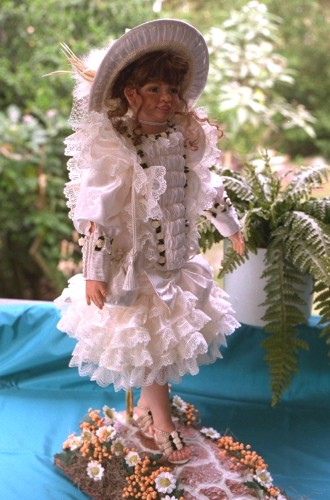

"Lisette" "Lisette" was the first doll I sculpted and will always hold a special place in my heart.... not just because she was the first, but because she won the 1996 "Australian Doll of the Year" in the polymer clay category. This is a people's choice award, sponsored by Australia's Doll Digest magazine, and achieving this gave me the confidence to go on and improve my dollmaking, and especially my sculpting skills. She has graced the cover of Doll Digest magazine, and has been featured in the "Gallery" pages of Contemporary Doll Collector. I think we all look back fondly on our "first", if only to see how far we've come.
"Lisette" has achieved far more success than I ever expected from her and currently holds center stage in my personal collection. At 34 inches, she is a big doll and was originally inspired by my sister Lisa. Whenever Lisa smiles, she smiles with her eyes.
|